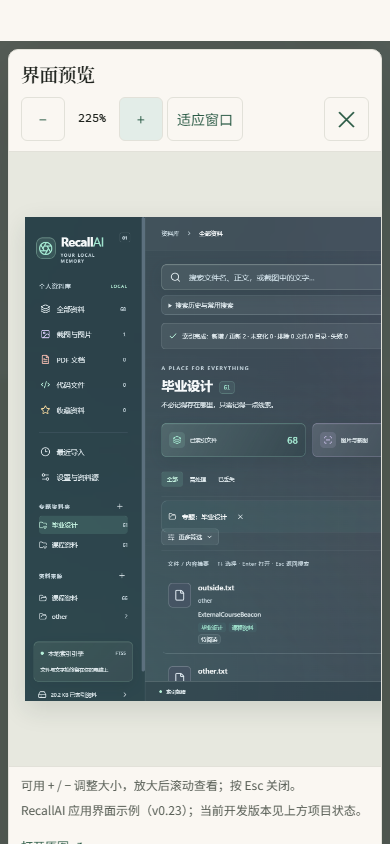

有间小站 · 0.12.0
让访客能看清截图、快速定位作品说明、找到真实项目记录与交流入口。
- 截图放大、滚动、键盘关闭与焦点返回。
- 站内 → 与外部 ↗ 分开；展示网站与 GitHub 账号分开命名。
- 作品目录自动生成，跳转后仍保留返回列表的位置。
- 新增 DocumentAssistant 开发记录，与作品双向关联。
- 关于页增加真实 GitHub 账号，移除准备中的占位。
81 项浏览器断言通过。保留现有视觉与便签存储，未增加网站运行依赖。
手机检查使用浏览器模拟，未作实体手机与 Safari 验证。未启用公开托管。
需求、计划与检查记录
界面证据
桌面首页 · 手机首页 · 作品目录 · 联系区
